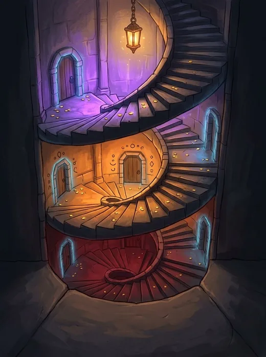

Le configurateur de partie (✅ validé le 22/11/2026 : « d’accord avec tous les points » ; la Crypte est construite)
Ton idée du 22/11 : on garde les 4 portes ; dans chaque porte, un portail par jeu ; en touchant un jeu, un configurateur commun à tous les jeux : 1. le mode → 2. le héros → 3. les options → ▶ Jouer. Cette page montre les écrans sur l’exemple de la Crypte, avec les vraies images du jeu. Rien n’est construit : j’attends ton accord.
Un seul code pour tous les jeux (configurateur.js) : chaque jeu ne donne que sa liste de modes, ses options et sa fonction « lancer ». Les accueils actuels (Crypte, Descente, Odyssée, Expéditions, Défense, Duel) disparaissent au profit de ce même écran.
0. Comment on y arrive
‹ Retour⚡ Jouer vite⚙️
⚡ Jouer vite
👆
Un portail = un jeu. Plus de portail par mode.
La porte garde ses portails, mais chacun ouvre un jeu (la Crypte), plus un mode précis.
1. Le mode (grandes cartes illustrées)
‹ Retour❓ Règles
🪦 La Crypte aux Sceaux
1 · Choisis ton mode
🗓️ Crypte du jour
▶ Reprendre
🗺️ La Descente
🗓️ La crypte du jourLa même pour tout le monde aujourd’hui. Compare ton score avec tes amis.
🗼 Plateau : Les deux tours🔥 Creuset bouillantRecord du jour : pas encore tentée En haut, les 3 modes en petites cartes ; celle qu’on touche s’affiche en grand avec sa description. « ▶ Reprendre » seulement sur la carte du mode où une partie est en cours.
‹ Retour❓ Règles
🪦 La Crypte aux Sceaux
1 · Choisis ton mode
🗓️ Crypte du jour
🎲 Au hasard
▶ Reprendre🗺️ La Descente
🗺️ La DescenteTrois étages de cryptes, des haltes, un boss par étage. Ta vie ne remonte presque pas.
Partie en cours : Fez · étage 2 · ❤ 31 ▶ Reprendre ma descente
Nouvelle descente ›
Une partie en cours : deux boutons. « Reprendre » va directement au jeu ; « Nouvelle » passe aux étapes 2 et 3 et prévient que l’ancienne sera abandonnée.
2. Le héros
‹ Mode❓ Règles
🪦 La Crypte du jour
2 · Avec qui ?
⚡ Coup d’enclume : brise 3 sceaux d’un monstre.
❤ 55 PV · niveau 48 · ★★★
+ tes héros d’aventure en dessous (Fez…)
Le héros choisi est retenu pour ce jeu : la prochaine fois il est déjà sélectionné, un toucher sur « Suivant » suffit. Il n’y a plus deux choix du héros (Crypte puis Descente).
3. Les options (selon le mode)
‹ Héros❓ Règles
🪦 La Crypte du jour
3 · Les options
🗼 Le plateau
Les deux tours : 2 colonnes de 6 cartes.
🔥 La règle du jour
Creuset bouillant : le creuset plein donne 2 Runes.
♛ Le Gardien
3 phases.
🗓️ Crypte du jour · Maëlle · Les deux tours · Creuset bouillant
▶ Jouer
Crypte du jour : tout est imposé (c’est la même pour tous) ; on le montre quand même, pour savoir à quoi s’attendre.
‹ Héros❓ Règles
🪦 Une crypte au hasard
3 · Les options
Le plateau
🎲 Au hasard🂠 Trois colonnes🃏 Quatre🪜 L’escalier🗼 Deux tours
Une règle en plus ?
Aucune🪙 Fortune🏋 Main lourde🎯 Main sûre⛓ Chaînes d’or…
⭐ 3 défis à étoiles
Tirés au lancement.
🎲 Au hasard · Maëlle · plateau au hasard
▶ Jouer
Crypte au hasard : nouveau, on peut choisir le plateau et ajouter une règle (aujourd’hui tout est tiré au hasard). Par défaut tout reste « au hasard ».
‹ Héros❓ Règles
🗺️ La Descente
3 · Les options
🔮 Ta breloque
Aucune❤ Cœur de braise🪙 Bourse pleine
🩸 Un pacte ?
Pas de pacte🩸 Sang ×1,3🥀 Verre ×1,25🌑 Nuit ×1,2
Descente du jour ?
Non, au hasard🗓️ Celle du jour
🗺️ Descente · Maëlle · ❤ · sans pacte · prof. 0
▶ Jouer
La Descente : les options d’aujourd’hui (breloque, pacte, profondeur) rangées au même endroit, chacune dans sa case.
4. Ce que ça change partout ensuite
- La Crypte (pilote) : Crypte du jour · Au hasard · La Descente. La porte « Partir à l’aventure » garde son portail « La Descente », qui ouvre ce même configurateur avec la Descente déjà choisie.
- L’Odyssée : île du jour · Saison 1 · sans fin · Route du Titan (les 3 emplacements de sauvegarde deviennent le « Reprendre » de la carte).
- Les Expéditions : L’Expédition · Duel d’équipages · voyage du jour.
- La Défense : partie normale · défi du jour.
- Le Duel : contre l’ordinateur · Duel de la semaine · énigme du jour · tutoriel (le choix du deck devient une option de l’étape 3).
- Les scénarios flash (ton idée) : plus tard, un mode de plus dans chaque configurateur.
5. Tes réponses
- La forme : 3 écrans à la suite (comme ici, avec « Suivant ») ou une seule page qui défile (mode, héros, options l’un sous l’autre, « ▶ Jouer » toujours en bas) ?
Mon avis : 3 écrans, comme tu l’as décrit. Sur téléphone c’est plus lisible et la grande image du mode a la place de respirer.
- Le héros retenu : un héros par jeu (Maëlle pour la Crypte, Gorm pour l’Odyssée…) ou un seul pour tous les jeux ?
Mon avis : un par jeu. On ne joue pas forcément le même héros partout.
- Crypte au hasard : d’accord pour pouvoir choisir le plateau et ajouter une règle (par défaut tout au hasard) ?
Mon avis : oui, ça donne enfin des options à ce mode, sans rien imposer.
- La Descente du jour : une option de la Descente (comme ici) ou un 4e mode à part « Descente du jour » ?
Mon avis : une option, pour garder 3 cartes lisibles.
- Les images : la carte « Au hasard » prend l’image de la table de la crypte en attendant. Tu veux un prompt Gemini pour une vraie image « crypte au hasard » ?
Mon avis : oui, plus tard ; on peut construire sans.
Réponds simplement « 1 oui, 2 … » ou « OK pour tout ». Ensuite je construis la Crypte en pilote, je te montre une planche, puis les autres jeux un par un.